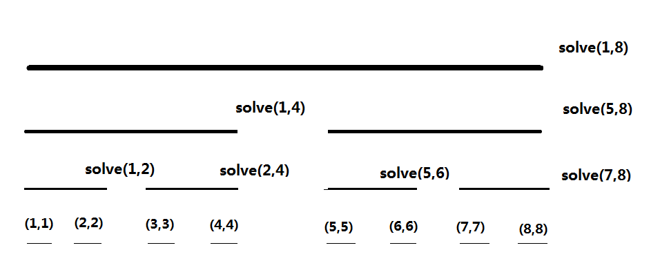

Chia để trị CDQ
Trang này sẽ giới thiệu về CDQ phân trị.
Giới thiệu
CDQ phân trị là một tư tưởng chứ không phải một thuật toán cụ thể, tương tự quy hoạch động. Hiện nay, tư tưởng này được mở rộng khá rộng rãi, tùy theo nguyên lý và cách viết có thể chia thành ba loại lớn:
- Giải các bài toán liên quan đến cặp điểm.
- Tối ưu và chuyển trạng thái cho DP 1D.
- Thông qua CDQ phân trị, biến một số bài toán động thành bài toán tĩnh.
Tư tưởng CDQ phân trị được IOI2008 huy chương vàng Chen Danqi tổng kết khi còn học phổ thông, vì vậy mang tên này.1
Giải các bài toán liên quan đến cặp điểm
Loại bài này thường giống như “cho một dãy độ dài \(n\), đếm số cặp điểm \((i,j)\) có tính chất nào đó” hoặc “cho một dãy độ dài \(n\), tìm một cặp \((i,j)\) sao cho một hàm đạt cực đại”.
Quy trình thuật toán CDQ phân trị cho loại này như sau:
-
Tìm điểm giữa \(mid\) của dãy;
-
Chia tất cả cặp điểm \((i,j)\) thành 3 loại:
- \(1 \leq i \leq mid,1 \leq j \leq mid\);
- \(1 \leq i \leq mid ,mid+1 \leq j \leq n\);
- \(mid+1 \leq i \leq n,mid+1 \leq j \leq n\).
-
Tách dãy \((1,n)\) thành hai dãy \((1,mid)\) và \((mid+1,n)\). Khi đó loại 1 và loại 3 đều nằm trong hai dãy này;
-
Đệ quy xử lý hai loại này;
-
Tìm cách xử lý loại 2.
Có thể thấy tư tưởng CDQ phân trị là liên tục phân chia các cặp điểm cho hai nửa bằng đệ quy.
Trong ứng dụng thực tế, ta thường dùng hàm solve(l,r) để xử lý các cặp điểm \(l \leq i \leq r,l \leq j \leq r\). Phần đệ quy trong quy trình trên được thực hiện bằng solve(l,mid) và solve(mid,r). Phần còn lại là loại 2 cần thiết kế thuật toán riêng để giải.
Ví dụ
三维偏序
Cho một dãy, mỗi điểm có ba thuộc tính \(a_i,b_i,c_i\). Hãy đếm số cặp điểm \((i,j)\) thỏa \(a_j \leq a_i\) và \(b_j \leq b_i\) và \(c_j \leq c_i\) và \(j \ne i\).
Ý tưởng
Ba chiều thứ tự là bài kinh điển của CDQ phân trị.
Đề yêu cầu đếm số cặp điểm, nên thử dùng CDQ phân trị.
Trước tiên sắp dãy theo \(a\).
Giả sử đã có solve(l,r) và đệ quy xong solve(l,mid) và solve(mid+1,r). Giờ cần thống kê các cặp \((i,j)\) với \(l \leq i \leq mid\) và \(mid+1 \leq j \leq r\) mà còn thỏa \(a_{i} \leq a_{j}\), \(b_{i} \leq b_{j}\), \(c_{i} \leq c_{j}\).
Suy nghĩ một chút sẽ thấy điều kiện \(a_{i} \leq a_{j}\) không còn tác dụng: vì \(i \leq mid < j\) nên chắc chắn \(i < j\), và do đã sắp theo \(a\) nên \(a_{i} \leq a_{j}\). Khi đó chỉ còn \(b_{i} \leq b_{j}\) và \(c_{i} \leq c_{j}\). Ta có thể duyệt \(j\) và đếm số \(i\) thỏa.
Để tiện duyệt, ta sắp các điểm trong \((l,mid)\) và \((mid+1,r)\) theo \(b\) tăng dần. Sau đó lần lượt duyệt từng \(j\), đưa tất cả điểm \(i\) có \(b_{i} \leq b_{j}\) vào một cấu trúc dữ liệu (chọn Fenwick). Khi đó chỉ cần truy vấn Fenwick xem có bao nhiêu điểm có \(c \leq c_{j}\) là biết với điểm \(j\) có bao nhiêu \(i\) hợp lệ.
Khi chèn một điểm có \(c=x\), ta tăng một đơn vị tại vị trí \(x\) trên Fenwick; truy vấn số điểm có \(c \le x\) là lấy tổng tiền tố. Nếu trước đó ta đã rời rạc hóa tất cả giá trị \(c\) thì độ phức tạp là chuẩn.
Với mỗi \(j\), ta cần chèn tất cả \(i\) có \(b_{i} \leq b_{j}\). Do \(i\) và \(j\) đã được sắp theo \(b\), chỉ cần dùng hai con trỏ để chèn, số lần chèn từ \(O(n^2)\) giảm còn \(O(n)\).
Như vậy ta xử lý phần thông tin của loại 2 trong \(O(n\log n)\). Tổng thời gian là \(T(n)=T(\lfloor \frac{n}{2} \rfloor)+T(\lceil \frac{n}{2} \rceil)+O(n\log n)=O(n\log^2n)\).
Mã mẫu
1 2 3 4 5 6 7 8 9 10 11 12 13 14 15 16 17 18 19 20 21 22 23 24 25 26 27 28 29 30 31 32 33 34 35 36 37 38 39 40 41 42 43 44 45 46 47 48 49 50 51 52 53 54 55 56 57 58 59 60 61 62 63 64 65 66 67 68 69 70 71 72 73 74 75 76 77 78 79 80 81 82 83 84 85 86 87 88 89 90 91 92 93 94 95 96 97 98 99 100 101 102 103 104 105 | |
CQOI2011 动态逆序对
Với dãy \(a\), số nghịch thế là số phần tử trong tập \(\{(i,j)| i < j \wedge a_i > a_j \}\).
Cho một hoán vị \(1\sim n\), theo một thứ tự nào đó xóa lần lượt \(m\) phần tử. Nhiệm vụ là trước mỗi lần xóa, thống kê số nghịch thế của toàn dãy.
Mã mẫu
1 2 3 4 5 6 7 8 9 10 11 12 13 14 15 16 17 18 19 20 21 22 23 24 25 26 27 28 29 30 31 32 33 34 35 36 37 38 39 40 41 42 43 44 45 46 47 48 49 50 51 52 53 54 55 56 57 58 59 60 61 62 63 64 65 66 67 68 69 70 71 72 73 74 75 76 77 78 79 80 81 82 83 84 85 86 87 88 89 90 91 92 93 94 95 96 97 98 99 100 101 102 103 104 105 106 107 108 109 110 111 112 113 114 115 116 117 118 119 | |
CDQ phân trị tối ưu chuyển trạng thái DP 1D/1D
Nội dung liên quan: CDQ 分治优化 DP
DP 1D/1D là một lớp bài toán DP có mảng DP một chiều, chuyển trạng thái là \(O(n)\). Nếu điều kiện phù hợp, có thể dùng CDQ phân trị để giảm độ phức tạp từ \(O(n^2)\) xuống \(O(n\log^2n)\).
Ví dụ: cho một dãy, mỗi phần tử có hai thuộc tính \(a\), \(b\). Ta cần tính DP theo công thức:
\(dp_{i}=1+ \max_{j=1}^{i-1}dp_{j}[a_{j} < a_{i}][b_{j} < b_{i}]\)
Đây là DP của dãy tăng hai chiều: chỉ có \(j < i,a_{j} < a_{i}\),\(b_{j} < b_{i}\) mới cập nhật được \(i\).
Chuyển trạng thái trực tiếp là \(O(n^2)\). Dưới đây là cách dùng CDQ phân trị để tối ưu chuyển trạng thái.
Ta nhận thấy quan hệ chuyển từ \(dp_{j}\) sang \(dp_{i}\) cũng là quan hệ giữa cặp điểm, nên dùng cách tương tự CDQ xử lý cặp điểm.
Quá trình này tương đối “công thức”. Giả sử đang xử lý đoạn \((l,r)\), quy trình như sau:
- Nếu \(l=r\) nghĩa là \(dp_{r}\) đã tính xong. Tăng \(dp_{r}\) lên 1 rồi trả về;
- Đệ quy
solve(l,mid)； - Xử lý tất cả chuyển trạng thái \(l \leq j \leq mid\) và \(mid+1 \leq i \leq r\)；
- Đệ quy
solve(mid+1,r).
Bước 3 gần giống CDQ cho ba chiều thứ tự. Khi xử lý \(l \leq j \leq mid\) và \(mid+1 \leq i \leq r\) thì không cần điều kiện \(j<i\) nữa. Ta vẫn sắp tất cả điểm theo \(a\), dùng hai con trỏ để chèn các điểm \(j\) vào Fenwick, rồi truy vấn giá trị lớn nhất tiền tố để cập nhật \(dp_i\).
Chứng minh đúng đắn của quá trình chuyển trạng thái
Khác biệt lớn nhất giữa cách CDQ này và cách CDQ xử lý cặp điểm là phần xử lý các cặp \(l \leq j \leq mid\), \(mid+1 \leq i \leq r\). Với CDQ cặp điểm, phần này đặt ở đâu cũng được. Nhưng với CDQ tối ưu DP, phần này phải nằm giữa solve(l,mid) và solve(mid+1,r) vì chuyển trạng thái DP là có thứ tự, phải thỏa:
- Mọi \(dp_{j}\) dùng để tính \(dp_{i}\) đều đã tính xong, không được có “bán thành phẩm”；
- Mọi \(dp_{j}\) hợp lệ đều đã cập nhật vào \(dp_{i}\), không được bỏ sót.
Hai điều kiện này dễ thỏa trong \(O(n^2)\), nhưng CDQ làm đảo thứ tự, nên cần kiểm chứng.
Cây đệ quy CDQ như sau.

Nếu thực thi quy trình, lấy điểm \(8\) làm ví dụ, giá trị DP của nó được cập nhật trong solve(1,8), solve(5,8), solve(7,8), và các điểm dùng để cập nhật lần lượt thuộc \((1,4)\), \((5,6)\), \((7,7)\); lấy điểm \(5\) làm ví dụ, DP của nó được xử lý trong solve(1,4) với miền cập nhật \((1,4)\). Quan sát kỹ sẽ thấy một điểm \(i\) được cập nhật \(\log\) lần, và các miền cập nhật chính là các đoạn con trên cây đoạn của \((1,i)\). Vì vậy mọi \(j\) hợp lệ đều cập nhật được \(i\), thỏa điều kiện 2.
Tiếp theo phân tích luồng thực thi:
- Hàm kết thúc đầu tiên là
solve(1,1); \(dp_{1}\) đã tính xong; - Hàm đầu tiên thực hiện chuyển trạng thái là
solve(1,2); \(dp_{2}\) đã được cập nhật xong; - Hàm kết thúc thứ hai là
solve(2,2); \(dp_{2}\) đã tính xong; solve(1,2)kết thúc, đoạn \((1,2)\) đã tính xong;- Chuyển trạng thái tiếp theo là
solve(1,4); sau đó \(dp_{3}\) đã được cập nhật; solve(3,3)kết thúc; \(dp_{3}\) đã tính xong;- Tiếp theo
solve(2,4); \(dp_{4}\) được \((1,2)\) cập nhật trongsolve(1,4)và lần này được \((3,3)\) cập nhật, nên \(dp_{4}\) đã cập nhật xong; solve(4,4)kết thúc, \(dp_{4}\) đã tính xong;solve(3,4)kết thúc, \((3,4)\) đã tính xong;solve(1,4)kết thúc, \((1,4)\) đã tính xong;- ……
Mô phỏng quá trình cho thấy: mỗi khi solve(l,r) kết thúc, toàn bộ DP trên đoạn \((l,r)\) đã được tính xong. Vì mỗi lần thực hiện chuyển trạng thái, solve(l,mid) đã kết thúc, nên chuyển trạng thái luôn hợp lệ, thỏa điều kiện 1.
Nhìn cây đệ quy CDQ như cây đoạn, CDQ tương đương duyệt trung thứ tự của cây, nên ta xử lý DP theo đúng thứ tự, chỉ là chuyển trạng thái bị tách nhỏ, do đó thuật toán đúng.
Ví dụ
SDOI2011 拦截导弹
Một nước phát triển hệ thống phòng thủ tên lửa. Hệ thống có nhược điểm: phát đầu có thể đạt mọi độ cao và chặn mọi tốc độ, nhưng các phát sau không được cao hơn phát trước, và tốc độ tên lửa chặn được cũng không lớn hơn phát trước. Một ngày kẻ địch tấn công. Do đang thử nghiệm nên chỉ có một hệ thống, có thể không chặn hết được mọi tên lửa.
Khi không thể chặn hết, ta chọn phương án giảm thiệt hại tối đa, tức là chặn được nhiều tên lửa nhất. Nếu có nhiều phương án tối ưu, ta chọn ngẫu nhiên một phương án làm kế hoạch.
Nhiệm vụ: tính xác suất mỗi tên lửa bị chặn trong quá trình ra quyết định trên.
Mã mẫu
1 2 3 4 5 6 7 8 9 10 11 12 13 14 15 16 17 18 19 20 21 22 23 24 25 26 27 28 29 30 31 32 33 34 35 36 37 38 39 40 41 42 43 44 45 46 47 48 49 50 51 52 53 54 55 56 57 58 59 60 61 62 63 64 65 66 67 68 69 70 71 72 73 74 75 76 77 78 79 80 81 82 83 84 85 86 87 88 89 90 91 92 93 94 95 96 97 98 99 100 101 102 103 104 105 106 107 108 109 110 111 112 113 114 115 116 117 118 119 120 121 122 123 124 125 126 127 128 129 130 131 132 133 134 135 136 137 138 139 140 141 142 143 144 145 146 147 148 149 150 151 152 153 154 155 156 157 158 159 160 161 162 163 164 165 166 167 | |
Biến bài toán động thành bài toán tĩnh
Hai loại trước dùng CDQ để chia đôi dãy rồi xử lý quan hệ giữa các cặp điểm nhằm đạt độ phức tạp tốt. Ở đây, thứ bị chia đôi không phải dãy thông thường mà là dãy theo thời gian.
Áp dụng cho các bài “hỗ trợ sửa đổi xxx rồi truy vấn xxx”. Loại bài này có hai đặc điểm:
- Nếu offline các truy vấn, mọi thao tác sẽ xếp theo thứ tự thời gian.
- Mỗi thao tác sửa đổi liên quan mật thiết đến các truy vấn sau đó. Quan hệ “sửa đổi - truy vấn” có \(O(n^2)\) cặp.
Ta có thể dùng CDQ phân trị trên dãy thao tác để xử lý quan hệ giữa sửa đổi và truy vấn.
Tương tự CDQ cặp điểm, giả sử đang chia dãy \((l,r)\), ta đệ quy xử lý quan hệ sửa đổi - truy vấn trong \((l,mid)\) và \((mid,r)\), rồi xử lý các cặp \(l \leq i \leq mid\), \(mid+1 \leq j \leq r\) với \(i\) là sửa đổi, \(j\) là truy vấn.
Lưu ý: nếu các sửa đổi độc lập thì không cần xử lý quan hệ thời gian giữa \(l \leq i \leq mid\) và \(mid+1 \leq j \leq r\), cũng như giữa solve(l,mid) và solve(mid+1,r) (ví dụ phép cộng trừ đơn giản). Nhưng nếu các sửa đổi không độc lập (ví dụ phép gán), thì bước xử lý cặp vượt qua \(mid\) phải đặt giữa solve(l,mid) và solve(mid+1,r). Lý do giống CDQ tối ưu DP 1D: phải theo duyệt trung thứ tự để đảm bảo mọi sửa đổi theo đúng thứ tự thời gian.
Ví dụ
Cộng hình chữ nhật và hỏi tổng hình chữ nhật
Duy trì một mảng 2D, hỗ trợ cộng một giá trị vào một hình chữ nhật, và truy vấn tổng của một hình chữ nhật.
Ý tưởng
Với phiên bản không sửa đổi, tức “cho mảng 2D, nhiều truy vấn tổng hình chữ nhật”, có cách kinh điển dùng sweep line + segment tree: tách mỗi hình chữ nhật thành thao tác thêm/xóa, mỗi truy vấn thành hiệu hai tổng tiền tố 2D, rồi offline. Nhưng bài này có sửa đổi, không thể dùng trực tiếp.
Thử dùng CDQ phân trị. Offline toàn bộ sửa đổi và truy vấn tạo thành một dãy, có \(O(N^2)\) quan hệ sửa đổi - truy vấn. Vẫn theo quy trình CDQ, chia quan hệ thành ba loại, ở mỗi mức chỉ xử lý quan hệ vượt qua \(mid\), còn lại đệ quy xử lý.
Ta nhận thấy mọi sửa đổi đều xảy ra trước truy vấn. Khi đó bài toán tương đương “trên mặt phẳng có một tập hình chữ nhật tĩnh, liên tục hỏi tổng trên một hình chữ nhật”.
Dùng sweep line xử lý toàn bộ quan hệ vượt qua \(mid\) trong \(O(n\log n)\), rồi đệ quy xử lý hai nửa còn lại.
Với CDQ này, mỗi truy vấn được xử lý \(O(\log n)\) lần. Không sao vì mỗi lần các sửa đổi đóng góp là không giao nhau. Tổng thời gian \(T(n)=T(\lfloor \frac{n}{2} \rfloor)+T(\lceil \frac{n}{2} \rceil)+ O(n\log n)=O(n\log^2n)\).
Nhìn lại, ban đầu ta chỉ giải được bài toán tĩnh, nhưng dùng CDQ phân trị ta có thể offline để giải bài toán động. Tinh túy của “biến động thành tĩnh” là mỗi lần CDQ chỉ xử lý quan hệ sửa đổi - truy vấn vượt qua một điểm, do đó ta chỉ cần xét trường hợp “mọi truy vấn đều sau mọi sửa đổi” vốn đơn giản hơn. Vì vậy CDQ được gọi là “công cụ biến bài toán động thành tĩnh”.
[Ynoi2016] 镜中的昆虫
Duy trì dãy \(a_i\) dài \(n\) với \(m\) thao tác.
- Gán giá trị đoạn \([l,r]\) thành \(x\);
- Hỏi trong đoạn \([l,r]\) có bao nhiêu giá trị khác nhau, tức mỗi số xuất hiện nhiều lần chỉ tính một.
Tóm tắt: gán đoạn và đếm số màu trong đoạn.
Ý tưởng
Duy trì vị trí xuất hiện trước đó của mỗi vị trí là \(pre_{i}\), khi đó bài toán đếm số màu trong đoạn trở thành bài toán đếm điểm 2D kinh điển.
Nếu coi một đoạn màu liên tiếp là một điểm, có thể chứng minh số lần thay đổi của \(pre\) là \(O(n+m)\), tức mỗi thao tác chỉ gây \(O(1)\) thay đổi của \(pre\), nên có thể dùng CDQ phân trị giải bài toán động “cộng điểm - hỏi tổng hình chữ nhật”.
Sự thay đổi của mảng \(pre\) có thể xử lý bằng std::set. Kỹ thuật dùng set để duy trì các đoạn liên tiếp được gọi là old driver tree.
Mã mẫu
1 2 3 4 5 6 7 8 9 10 11 12 13 14 15 16 17 18 19 20 21 22 23 24 25 26 27 28 29 30 31 32 33 34 35 36 37 38 39 40 41 42 43 44 45 46 47 48 49 50 51 52 53 54 55 56 57 58 59 60 61 62 63 64 65 66 67 68 69 70 71 72 73 74 75 76 77 78 79 80 81 82 83 84 85 86 87 88 89 90 91 92 93 94 95 96 97 98 99 100 101 102 103 104 105 106 107 108 109 110 111 112 113 114 115 116 117 118 119 120 121 122 123 124 125 126 127 128 129 130 131 132 133 134 135 136 137 138 139 140 141 142 143 144 145 146 147 148 149 150 151 152 153 154 155 156 157 158 159 160 161 162 163 164 165 166 167 168 169 170 171 172 173 174 175 176 177 178 179 180 181 182 183 184 185 186 187 188 189 190 191 192 193 194 195 196 197 198 199 200 201 202 203 204 205 206 207 208 209 210 211 212 213 214 215 216 217 218 219 220 221 222 223 224 225 226 227 228 229 230 231 232 233 234 235 236 237 238 239 240 | |
[HNOI2010] 城市建设
Nước PS có nhiều thành phố. Vua Louis muốn xây ít đường nhất để nối thông toàn bộ thành phố. Nhưng chi phí xây đường thay đổi theo thời gian. Louis liên tục nhận được thông báo thay đổi chi phí một con đường. Ông muốn sau mỗi lần thay đổi biết ngay tổng chi phí nhỏ nhất để nối thông toàn bộ thành phố.
Tóm tắt: đồ thị hỗ trợ sửa đổi trọng số cạnh động, cần in ra tổng trọng số cây khung nhỏ nhất sau mỗi lần sửa đổi.
Ý tưởng
Có một cách dùng chia để trị trên segment tree kết hợp LCT giải bài, nhưng hằng số lớn, cần tối ưu tinh vi; nên cân nhắc CDQ phân trị.
Không giống CDQ truyền thống, ở đây không có quan hệ sửa đổi - truy vấn đơn giản để phân trị, vì không thể tách “một cạnh thay đổi đóng góp thế nào cho MST” riêng rẽ. Tư duy CDQ truyền thống khó dùng.
Quan sát các ví dụ trước: CDQ phân trị có liên hệ đặc biệt với cây đoạn, vì cây đệ quy CDQ chính là một cây đoạn. CDQ thường xét quan hệ giữa hai con của cây đoạn. Còn bài này cần xét quan hệ giữa cha và con; nói cách khác, khi xử lý đoạn $solve(l,r)$, nếu ta có thể làm cho quy mô đồ thị phụ thuộc vào độ dài đoạn, thì sẽ giải được.
Cụ thể như sau:
Giả sử đang xây dựng tập cạnh của MST cho đoạn \((l,r)\), và đã biết tập cạnh MST của nút cha. Ta gán trọng số \(+\infty\) và \(-\infty\) cho các cạnh bị thay đổi trong \((l,r)\), rồi chạy kruskal hai lần để lấy các cạnh thuộc MST.
Với một cạnh:
- Nếu trong MST khi mọi cạnh bị đổi được gán \(+\infty\) mà cạnh này không nằm trong cây, thì nó không thể xuất hiện trong MST của các truy vấn \((l,r)\). Vì vậy ta chỉ thêm các cạnh thuộc MST vào tập cạnh của \((l,r)\).
- Nếu trong MST khi mọi cạnh bị đổi được gán \(-\infty\) mà cạnh này xuất hiện trong cây, thì nó chắc chắn xuất hiện trong MST của đoạn \((l,r)\). Khi đó ta dùng DSU để co hai đỉnh, và cộng trọng số vào đáp án.
Như vậy ta xây được tập cạnh cho đoạn \((l,r)\). MST từ tập cạnh này tương đương MST của đồ thị ban đầu.
Vì sao độ phức tạp đúng?
Trước hết, các cạnh bị sửa đổi chắc chắn được thêm vào tập cạnh, số lượng là \(O(len)\).
Tiếp theo, cần chứng minh không có quá nhiều cạnh chưa bị sửa đổi: ta chỉ thêm các cạnh thuộc MST khi gán \(+\infty\), nên số cạnh thêm không vượt quá số đỉnh hiện tại.
Còn cần chứng minh rằng số đỉnh mỗi tầng đệ quy là \(O(len)\) để suy ra số cạnh là \(O(len)\).
Điều này đơn giản: mỗi lần xuống đệ quy, các cạnh bị co là những cạnh xuất hiện trong MST với trọng số \(-\infty\) mà không bị sửa đổi; tương đương ta cắt bỏ mọi cạnh bị sửa đổi trong MST \(-\infty\). Ta cắt nhiều nhất \(len\) cạnh, nên đồ thị tách thành \(O(len)\) thành phần liên thông, số đỉnh của đồ thị mới là \(O(len)\). Do đó mỗi lần chạy kruskal đều trên đồ thị cỡ \(O(len)\).
Vì vậy mỗi tầng là \(O(n\log n)\), tổng thời gian \(T(n)=T(\lfloor \frac{n}{2} \rfloor)+T(\lceil \frac{n}{2} \rceil)+ O(n\log n)=O(n\log^2n)\).
Cài đặt có thể khó. Lưu ý DSU không dùng nén đường đi để hỗ trợ quay lui. Việc co đỉnh không cần làm thật, mỗi tầng kruskal có thể dùng ngay DSU của tầng trên.
Mã mẫu
1 2 3 4 5 6 7 8 9 10 11 12 13 14 15 16 17 18 19 20 21 22 23 24 25 26 27 28 29 30 31 32 33 34 35 36 37 38 39 40 41 42 43 44 45 46 47 48 49 50 51 52 53 54 55 56 57 58 59 60 61 62 63 64 65 66 67 68 69 70 71 72 73 74 75 76 77 78 79 80 81 82 83 84 85 86 87 88 89 90 91 92 93 94 95 96 97 98 99 100 101 102 103 104 105 106 107 108 109 110 111 112 113 114 115 116 117 118 119 120 121 122 123 124 125 126 127 128 129 130 131 132 133 134 135 136 137 138 139 140 141 142 143 144 145 146 147 148 149 150 151 152 153 154 155 156 157 158 159 160 161 162 163 164 165 166 167 168 169 170 171 172 173 174 175 176 177 178 179 180 181 182 183 184 185 186 187 188 189 190 191 192 193 194 195 196 197 198 199 200 201 202 203 204 205 206 207 208 209 210 211 212 213 214 215 216 217 218 219 220 221 222 223 224 225 226 | |
Tài liệu tham khảo và chú thích
Last updated on this page:, Update history
Found an error? Want to help improve? Edit this page on GitHub!
Contributors to this page:OI-wiki
All content on this page is provided under the terms of the CC BY-SA 4.0 and SATA license, additional terms may apply